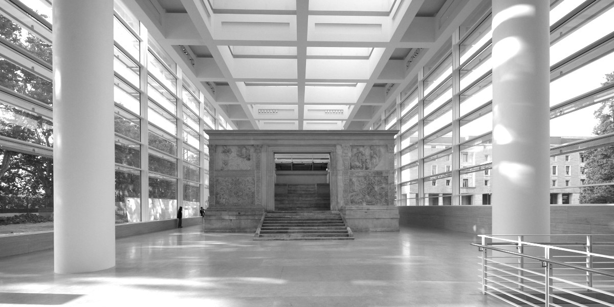

Biblioteche di Roma e CNR - Istituto di studi sul Mediterraneo
presentano
Le immigrazioni a Roma dal 1870 alla seconda guerra mondiale
20 marzo 2020 / 9.30 – 17.30 / ingresso libero
Auditorium dell'Ara Pacis, via di Ripetta 190

/ 9.30 /
Saluti istituzionali
- Luca Bergamo (vicesindaco Roma Capitale)
- Luca Montuori (assessore all’urbanistica)
- Paolo Fallai (presidente Biblioteche di Roma)
- Gilberto Corbellini (direttore Dipartimento Scienze Umane Cnr)
- Paola Avallone (direttore Cnr – ISMed)
Presentazione del progetto “150 anni di immigrazioni a Roma Capitale: storia, memoria, territori” (Michele Colucci, Cnr – ISMed)
/ 10.15 /
1. I caratteri di lungo periodo delle migrazioni dirette a Roma
Presiede Lucia Ceci (Università Tor Vergata)
- L’evoluzione urbanistica (Vezio De Lucia, urbanista)
- Lo sviluppo demografico (Massimiliano Crisci, Cnr - Irpps)
- Il fattore religioso (Matteo Sanfilippo, Università della Tuscia, Centro studi emigrazione Roma)
/ 11.45 /
2. La prima fase: dal 1870 alla prima guerra mondiale
Presiede Francesco Bartolini (Università di Macerata)
- L’immigrazione operaia (Maria Rosa Protasi, Università La Sapienza)
- L’arrivo dei funzionari e la burocrazia (Cecilia Dau Novelli, Università di Cagliari)
- Una immigrazione contadina: dalla Romagna a Ostia (Michele Nani, Cnr – ISMed)
/ 13.30 / Pausa pranzo
/ 14.30 /
3. Gli anni del fascismo
Presiede Lidia Piccioni (Università La Sapienza)
- Antiurbanesimo e migrazioni pianificate: la città nelle politiche del regime (Stefano Gallo, Cnr – ISMed)
- Arrivi e insediamenti durante il ventennio (Antonio Parisella, Museo storico della liberazione di via Tasso)
/ 15.45 /
4. Guerra e resistenza
Presiede Anna Balzarro (Irsifar)
- Una città di immigrati: Roma e “La storia” di Elsa Morante (Alessandra Gissi, Università L’Orientale di Napoli)
- Tutte le strade portano alle Ardeatine: le immigrazioni e la strage (Alessandro Portelli, Circolo Gianni Bosio)